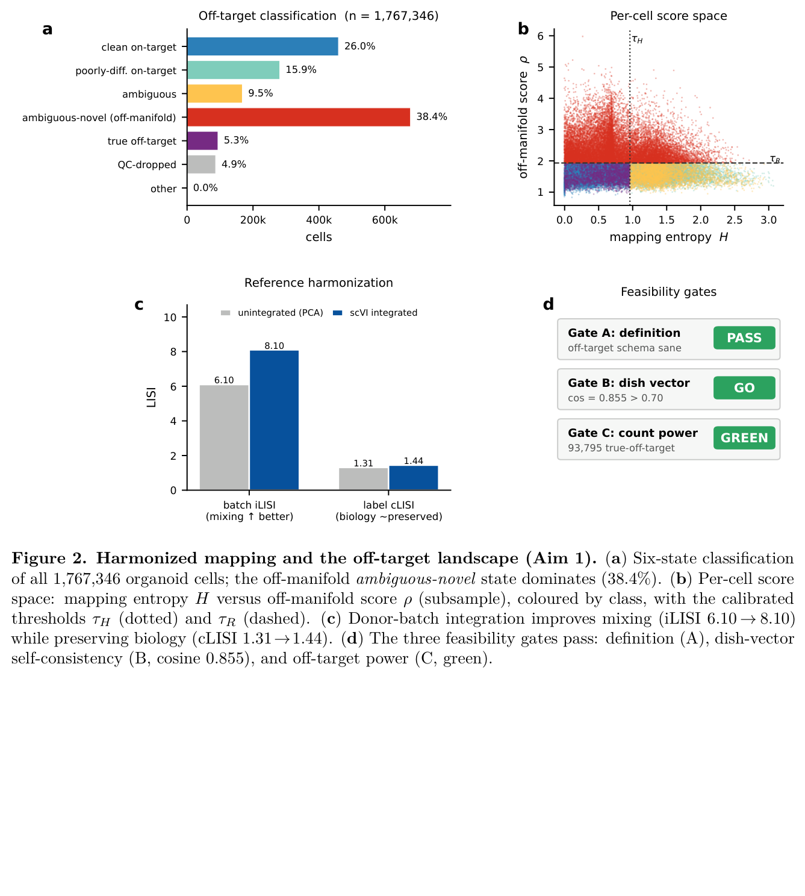
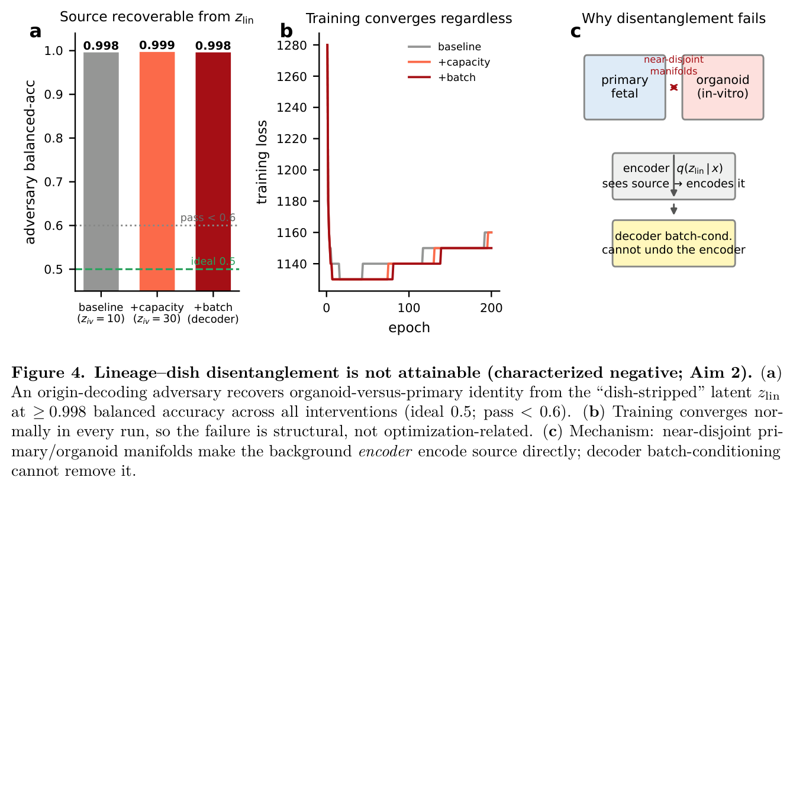
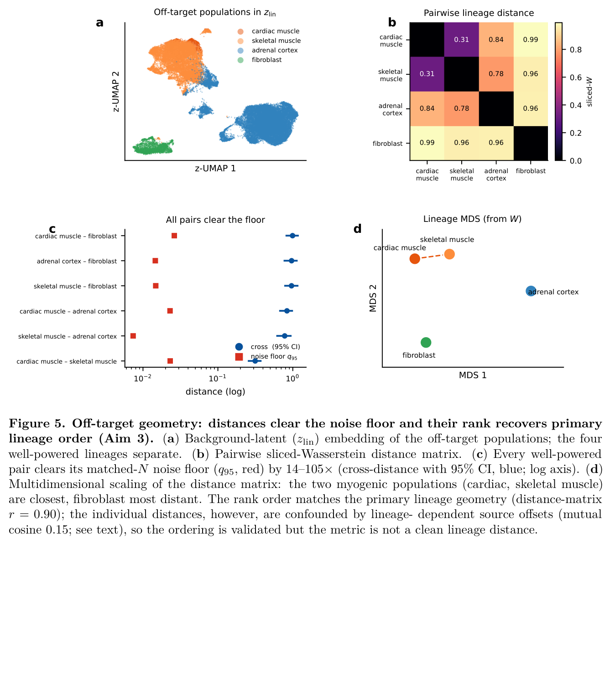

The question
Human neural organoids reliably produce cells that correspond to no real in-vivo neural state: non-neural lineages from incomplete germ-layer restriction, and aberrant states driven by the culture environment itself. This is a known embarrassment for the model. What has been missing is a principled way to measure it.
Everyone in the field can name the problem. A landmark result showed that metabolic and endoplasmic-reticulum stress in organoids impairs the specification of correct molecular subtypes, and cross-protocol comparisons against fetal tissue keep surfacing protocol-dependent off-target routes. But naming is not measuring. There was no atlas-anchored way to decide which organoid cells are off-target, to explain why they are off-target, and to ask whether that compartment is noise or carries reproducible structure.
The recent Human Neural Organoid Atlas (HNOCA), over 1.7 million cells across dozens of protocols, makes the measurement possible for the first time, because it puts the whole organoid landscape on one coordinate system. The move here is to anchor that landscape to a common developmental ground truth and read off-target status as distance from it.
Takeaway The contribution is to turn a vague quality concern into a calibrated, comparative measurement against a fixed developmental reference.
The setup
The reference had to span both fates an organoid can miss: neural and non-neural. So two recently completed human atlases were harmonized into one, a first-trimester human brain cell atlas (HDBCA) as the neural core plus the non-neural compartments of a fetal-body atlas, retrieved as raw UMI counts from the CELLxGENE Census. The merged reference is 2,615,898 cells by 61,497 genes, with 32 of 33 lineage origins resolved. The organoid query is the full 1,767,346-cell HNOCA.
Mapping used variational reference surgery: an scVI model trained on the reference (400 epochs, ELBO 695.6), refined to a label-aware scANVI (ELBO 736.1), with the query projected on by scArches architectural surgery (query-surgery ELBO 920.2). Each organoid cell then gets two calibrated scores, an off-manifold reconstruction distance and a label-assignment entropy, that jointly define a six-state off-target taxonomy.
Two thresholds, a label-entropy cutoff 0.96 and an off-manifold cutoff 1.93, were calibrated on held-out reference cells (the off-manifold nearest-neighbor fit excludes the held-out set, to avoid self-neighbor deflation of the distance). Donor-level batch integration raised cross-batch mixing while preserving biology: integration LISI rose from 6.10 to 8.10, with only a modest change in cell-type LISI (1.31 to 1.44).

Three feasibility gates confirmed the measurement is well-posed before any biology was read from it: the taxonomy is internally consistent (Gate A), an in-vitro "dish vector" computed on clean on-target cells is highly self-consistent (Gate B, mean cosine 0.855, above the 0.70 bar, justifying a single shared in-vitro axis), and the true off-target compartment is large enough for downstream geometry (Gate C, 93,795 cells).
Takeaway Before interpreting anything, the pipeline checks that the measurement is calibrated, biology-preserving, and adequately powered.
What the map showed
The partition is dominated by a single compartment. An ambiguous-novel (off-manifold) state holds 38.4% of cells (677,783), ahead of clean on-target (26.0%), poorly differentiated on-target (15.9%), ambiguous (9.5%), true off-target (5.3%), and QC-dropped (4.9%). A compartment that large forces the central question: artifact, or biology?
Identity and stress. Off-manifold neural cells lose neural-progenitor identity (NPC score 1.11 to 0.61) while gaining canonical culture-stress signatures: hypoxia (0.60 to 0.96) and the unfolded-protein/ER-stress response (0.12 to 0.56, a roughly five-fold rise), with an independent glycolysis hallmark elevated in step (0.46 to 0.65). This is the culture-stress signature reported by Bhaduri et al. (2020), now resolved at atlas scale and tied directly to off-manifold status.
Maturation and load. The off-manifold fraction rises monotonically with a per-cell complexity proxy (detected genes, quintile fractions 0.13 to 0.78) and is highest in the oldest organoids. Off-target burden accrues with culture time and metabolic demand, which is what a stress mechanism predicts and random misassignment does not.
Protocol dependence. Across 26 differentiation protocols the ambiguous-novel fraction spans nearly the whole range, 0.4% to 96.8%, roughly 240-fold. Guided cortical protocols sit low; regionally divergent or barrier-forming ones (choroid plexus at 96.8%, midbrain-dopaminergic and thalamic at 85 to 90%) sit high. That gradient is a clue, not a verdict: a first-trimester, cortex-rich reference under-represents later and non-cortical neural states, which then read as off-manifold. Part of the signal is a coverage gap, not aberrance.
Coherence. Off-manifold cells are not scattered. Across 30 Leiden communities the fraction is bimodal (per-cluster sd 0.29 about a mean of 0.55); 20% of cells sit in near-pure off-manifold clusters and 21% in near-pure clean clusters. Off-manifold status is a population-level property, not per-cell noise.
What survives that confound is a contrast, not an absolute. The clean distribution calibrates the shared displacement, and clean-versus-ambiguous cancels it: ambiguous-novel cells sit consistently further from the independent cortex manifold than clean cells (AUC 0.65, Cliff's delta 0.30, p below 10^-300; 70% exceed the clean median, 15% lie beyond the clean 95th percentile). That is confound-controlled evidence for a genuine in-vitro-divergence component, over and above the coverage gap.
Takeaway The dominant off-target compartment is a structured biological mixture: a reference-coverage gap superimposed on a pervasive, maturation-scaling in-vitro stress program.
The wall
The natural next step is seductive: if the in-vitro state is a low-dimensional nuisance, subtract it and place off-target cells on a clean lineage axis. This is the centerpiece, because the honest answer is that you cannot, and the value is in characterizing exactly why.
The tool was contrastiveVI, which factorizes a shared background latent (meant to carry lineage) from a salient latent (meant to carry the organoid-specific variation). Train background on primary fetal cells, salient on organoid cells, and the background should encode dish-stripped lineage. Disentanglement was scored adversarially: a held-out classifier tries to recover organoid-versus-primary origin from the background latent. Balanced accuracy 0.5 is ideal; below 0.6 would count as success.
It failed, and failed robustly. Baseline salient capacity gave adversary accuracy 0.998; tripling salient capacity gave 0.999; adding a source batch covariate to the decoder, the textbook remedy, gave 0.998. Training converged normally every time, so this is not an optimization failure.

The mechanism is structural. When organoid and fetal cells occupy near-disjoint regions of expression space, source identity is almost definitionally decodable, and there is no overlap region in which a shared lineage axis is even well defined. The background encoder observes the organoid-versus-primary difference and writes it into the latent directly; conditioning the decoder on a batch label cannot undo what the encoder has already encoded.
Naming that boundary, rather than restating the bare fact that source is decodable, is the point. It also identifies the only routes that could cross it: encoder-side interventions (adversarial or invariance-penalized encoders) or distributional rather than per-cell methods.
A negative result is worth stating only once you can say precisely where the wall is and why.the characterized negative
Takeaway Lineage cannot be split from in-vitro state in a shared latent here; the useful output is a named identifiability boundary, not a failed model.
The salvage
The disentanglement wall blocks a per-cell dish-stripped coordinate. It does not obviously block comparing off-target populations to each other, and that is where something is salvaged, with a caveat found by testing rather than assumed.
The powered arena for this is the non-neural contaminant lineages, not the neural compartment. That division of labor is deliberate: the neural off-manifold cells are larger but the first-trimester reference conflates their divergence with its own coverage gaps, whereas the non-neural contaminants (skeletal and cardiac muscle, fibroblast, adrenal-cortical) map to a complete fetal-body reference and number in the thousands. Of 17 off-target populations, four are well powered (cortical-adrenal 49,338; skeletal-muscle 30,629; fibroblast 6,349; cardiac-muscle 2,534).

All six pairwise comparisons are real differences, each clearing a matched-N self-distance noise floor by 14 to 105-fold (W from 0.32 to 0.99 against floors of 0.007 to 0.026); the remaining 130 small-N comparisons are correctly returned as underpowered. The instrument works.
The direct test failed the assumption. The per-lineage dish vectors are mutually inconsistent (mean pairwise cosine 0.15, against 0.855 for on-target neural types; only the two myogenic lineages align, at 0.55), and each pairwise offset difference is comparable in magnitude to the lineage separation itself. So the individual distances are confounded by a lineage-dependent offset and cannot be read as clean lineage metrics.
- The six pairwise distances are statistically real and clear the noise floor by 14 to 105-fold.
- Their rank order recovers the primary lineage geometry: the organoid and primary pairwise-distance matrices correlate r = 0.90 (two myogenic populations closest at W = 0.32, fibroblast most distant at W near 0.96 to 0.99, adrenal-cortical between).
- The constant-offset assumption does not hold (mutual cosine 0.15), so per-pair distances are confounded, not clean lineage metrics. Only the ordering is validated.
So the aim is presented for exactly what it is: a working capability with a reference-validated ordering, not a clean lineage geometry. The instrument orders the lineages as the primary reference does; recovering true per-pair distances would need per-lineage offset removal or a matched-primary embedding.
Takeaway Translation invariance rescues the rank order (r = 0.90), but a self-imposed offset-constancy test shows the individual distances stay confounded, so only the ordering is claimed.
Where it stops
The 240-fold protocol spread is the most tempting number to misuse. It measures distance from an early, cortex-rich reference, so a choroid-plexus protocol at 96.8% off-manifold is largely reference-absent, non-cortical and later than HDBCA covers, not 96.8% aberrant. Read as a fidelity ranking it would mis-rank faithfully regionalized organoids (choroid plexus, midbrain, thalamus) as the worst performers, which they are not. The axis is a fidelity axis only for protocols targeting the reference's own domain, or once the reference is broadened.
What it opens
The disentanglement wall does not close the convergence question that motivated the work; it reroutes it. The same translation invariance that rescued the geometry is itself a way to ask whether cell types of different developmental origin converge, without ever building a source-invariant per-cell coordinate.
To test whether, say, brain-derived and kidney-derived mesenchyme have arrived at the same state, one needs only their relative geometry in a space where the shared source offset cancels, the construction demonstrated here, with the proviso the offset-constancy test made concrete: the shared offset must actually be constant across the compared populations, or be explicitly removed. That is a checkable condition, not a free lunch. A cross-germ-layer convergence study therefore runs through the cancellation logic and an offset-constancy check, not through repairing contrastive disentanglement.
Framed as a statement about what is recoverable from which data, an identifiability boundary for calibration without anchoring, the characterized negative is a methods contribution in its own right, and it connects to a broader program: knowing when a latent coordinate can be trusted to mean what we want it to mean, and when the honest answer is that the geometry, not the coordinate, is all the data will support.
Takeaway The framework yields a comparative off-target measurement, a named identifiability boundary, and a checkable route to the convergence question the negative result reframes rather than blocks.